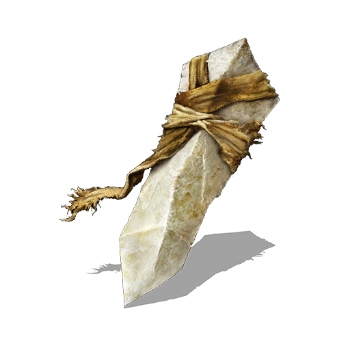
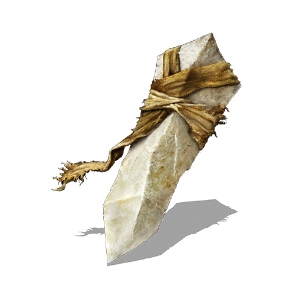

Dark Souls II (рус. Тёмные души II) — видеоигра в жанре action/RPG, разработанная компанией From Software. Она является непрямым продолжением игры Dark Souls. На PS3 и Xbox360 игра вышла 11 марта 2014 года в Северной Америке и 14 марта в Европе. PC-версия была выпущена в свет только 25 апреля того же года, но взамен за ожидание, разработчики предоставили более стабильные FPS, текстуры высокого качества и приспособленное для клавиатуры и мыши управление.


 
